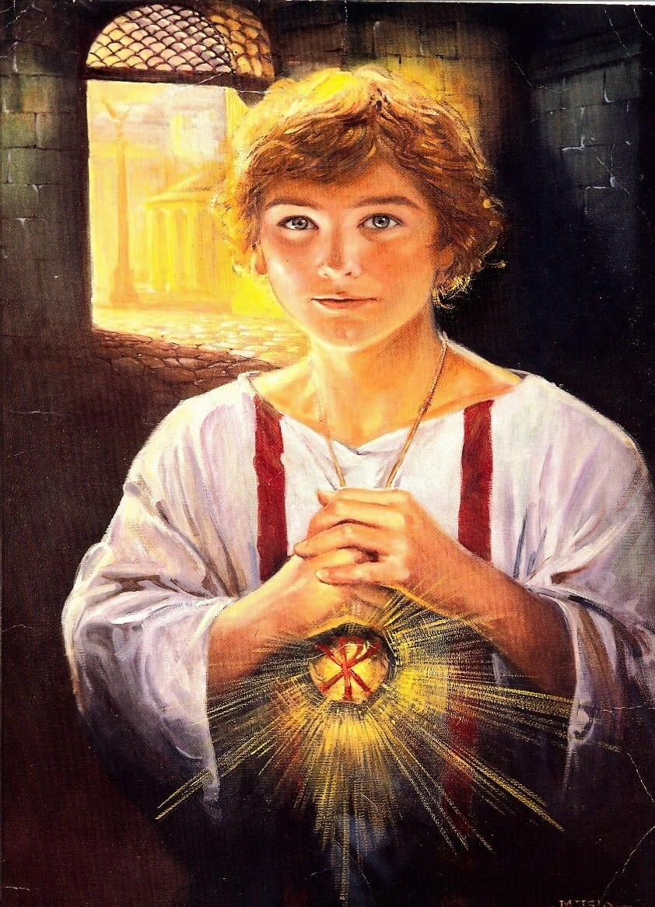
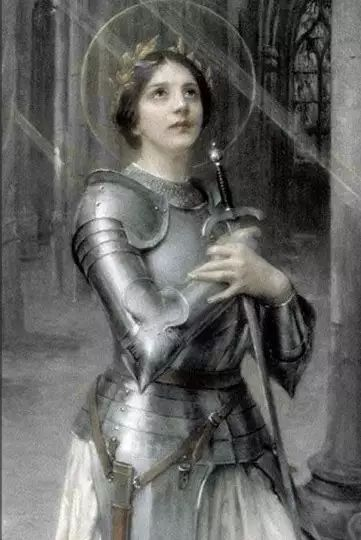

Santa Sandra Sabattini
“Uma vida vivida sem amor é uma vida desperdiçada.” - Santa Sandra Sabattini
Saiba maisSão João Paulo II
“Não tenhais medo! Abri, melhor, escancarai as portas a Cristo!” - São João Paulo II
Saiba maisSanto Carlo Acutis
“Todos nascem como originais, mas muitos morrem como cópias.” - Santo Carlo Acutis
Saiba maisSão Tarcísio
“Incrível juventude mártir que deu sua vida para proteger a Eucaristia.” - São Tarcísio
Saiba maisSanta Rita de Cássia

“Advogada dos impossíveis, padroeira das causas perdidas.” - Santa Rita de Cássia
Saiba maisSanta Joana Dark
“Eu não tenho medo. Fui nascida para fazer isso.” - Santa Joana Dark
Saiba mais